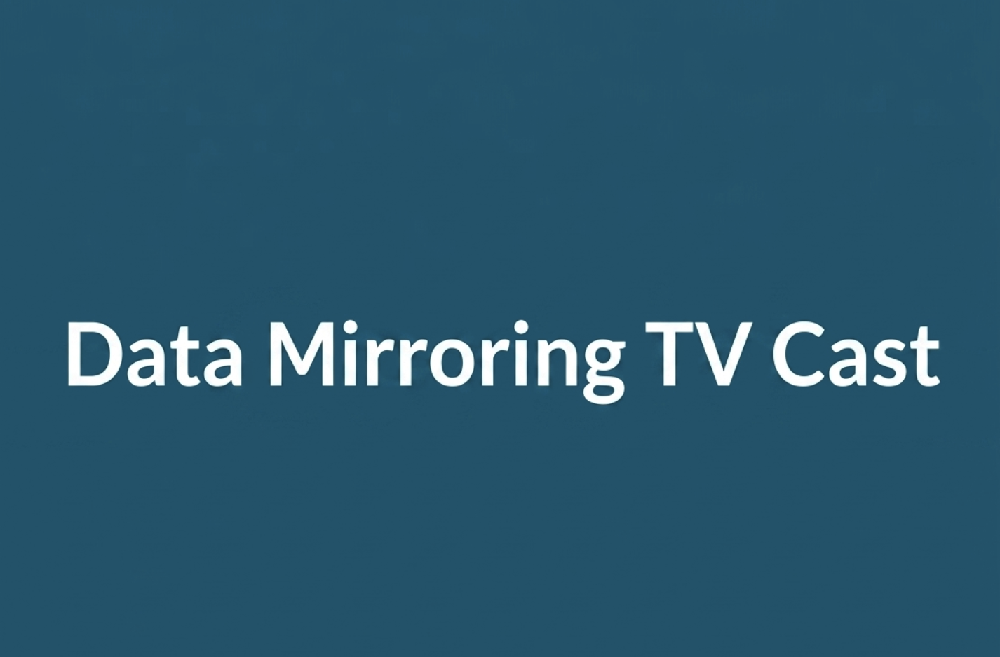

Founder’s portfolio
Data Mirroring TV Cast
I developed and launched the Data Mirroring TV Cast App using Flutter & Dart for both Android and iOS — now LIVE on the App Store and Google Play.

Product overview
I developed and launched the Data Mirroring TV Cast App using Flutter & Dart for both Android and iOS — now LIVE on the App Store and Google Play.
This project is part of Muhammad Usama’s portfolio and experience. It is presented as founder work, rather than a claim that SpheresX delivered it for a client.
Featured capabilities
- Full mobile screen mirroring to Smart TV
- Video, audio, photo & YouTube casting
- Browser, Google Drive & Photos casting
- Whiteboard casting & TV remote control
- HD & Ultra HD streaming quality
- Adapty subscriptions (Yearly & Lifetime)
- Firebase Analytics & Game Analytics
- Google AdMob monetization integration
Have something in mind?
Let’s turn your next idea into a clear product plan.